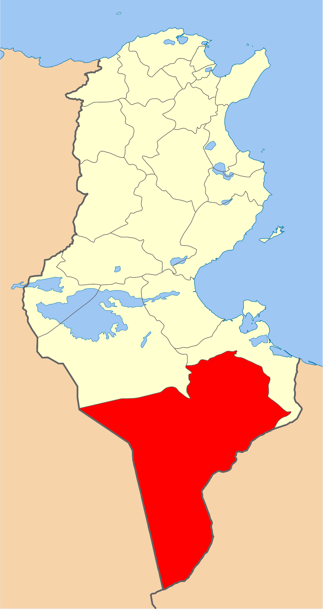
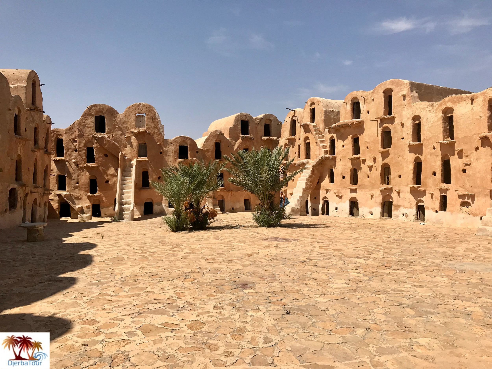
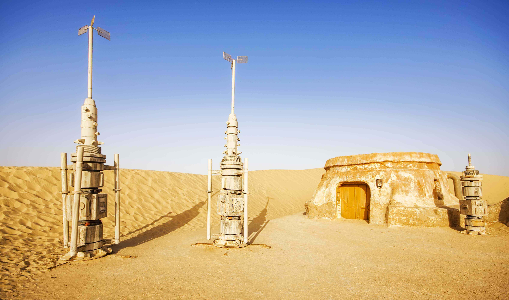
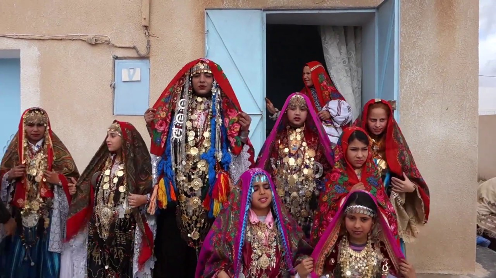
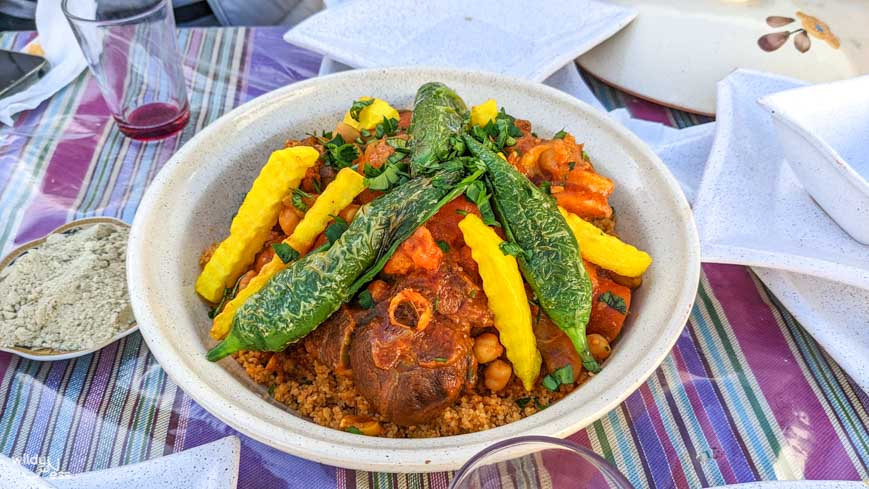
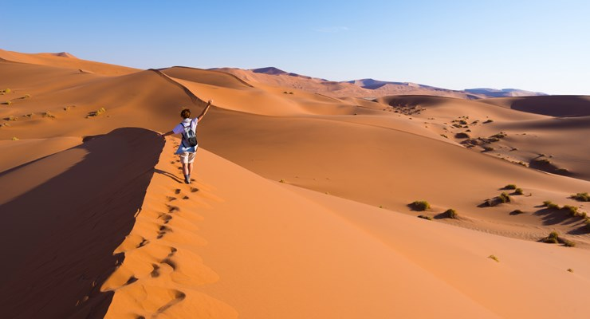

Tataouine
Fondée sous le protectorat français, pour assurer la pacification du sud du pays, elle est surnommée la « Porte du désert ». Son nom signifie « Source d'eau », en berbère. Plaque tournante du tourisme dans le sud du pays, cette ville animée constitue une étape importante dans la visite du grand Sud tunisien (désert, ksour et autres villages fortifiés). Malgré un tourisme saharien dynamique, la ville conserve son identité et son architecture traditionnelle.
La médina de Nabeul
Chenini
Douiret
Ksar Ouled Soltane
Quelques chiffres
Superficie
38 889 km2
Nombre de maisons
8 500
Habitants
149 453
Localisation
Situé à 500 kilomètres de la capitale, il est limité par les gouvernorats de Kébili et Médenine au nord, par la Libye à l'est et par l'Algérie à l'ouest. La température moyenne y est de 22 °C et la pluviométrie annuelle varie entre 88 et 157 millimètres1. Administrativement, le gouvernorat est découpé en sept délégations, six municipalités, cinq conseils ruraux et 64 imadas1. Remada est la plus grande des délégations de Tunisie pour ce qui est de la superficie.

Histoire
La région de Tataouine connaît durant son histoire la succession et le brassage de plusieurs civilisations dont notamment les civilisations puniques, romaines, berbères et enfin arabo-musulmane. Les Arabes venant de l'Orient se sont installés dans les plaines proches des puits pour exercer leurs activités agricoles et ont construit par la suite les ksour sur les montagnes pour y conserver les produits de leurs récoltes. En 1903, on enregistre le regroupement de plusieurs tribus qui étaient jusque-là de simples nomades pour constituer le noyau de l'actuelle ville de Tataouine (dont le nom signifie en berbère « source d'eau »).

Culture

hover me
hover me
hover me
hover me